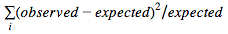
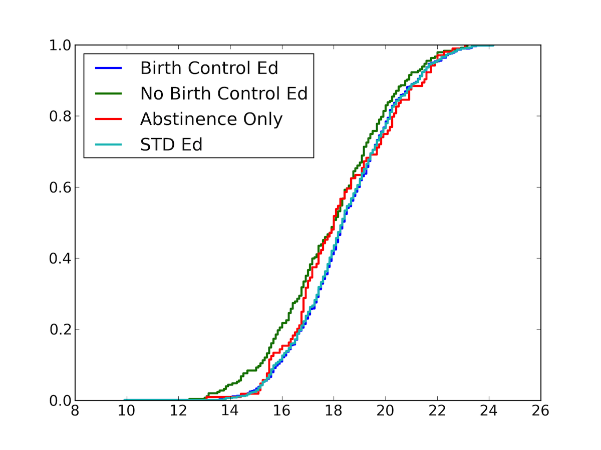
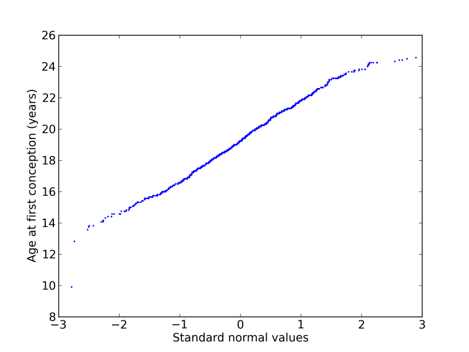
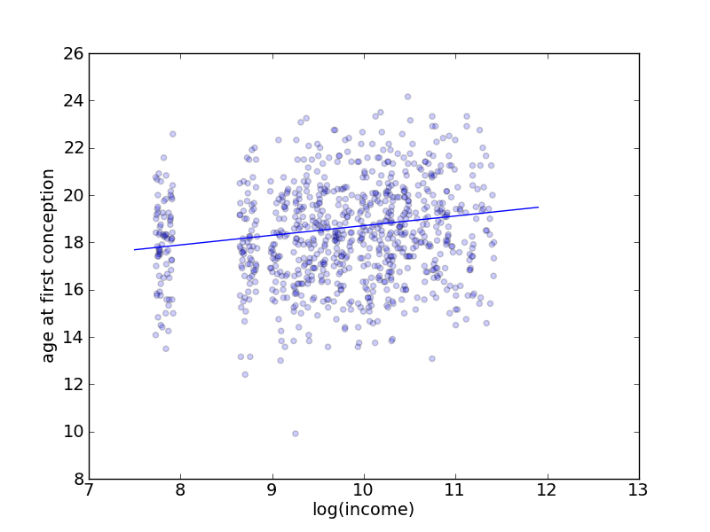

Investigation of Sex Education and Pregnancy rates
by Cypress Frankenfeld 2011-10-25
Introduction
Studies have been done on the efficacy of abstinence-only sex education that conclude that abstinence-only sex ed has no effect on teen pregnancy rates. Additionally, some studies have concluded that comprehensive sex ed reduces the rates of teen pregnancy.[1] I would like to be able to quantify the effect of sex ed on teen pregnancy, or unwanted pregnancy. Thus, I enter this project with the goal of investigating the effects of abstinence-only sex education and comprehensive sex education on pregnancy rates, unwanted pregnancy rates, and age of first pregnancy for young adults and teens. I use the most recent data from the National Survey of Family Growth (NSFG), Cycle 7, 2006-2010.[2]
Summary of Data
The NSFG data from Cycle 7 contains data from surveys conducted from 2006-2010. The surveys contain responses from 12279 women but out of the women surveyed, only those with age ≤ 24 years were asked about sex ed history, so I only include women under 25 in my study. In total there are 4395 women under 25 years of age who had a total of 2405 pregnancies.
Data Fields I Use
I use the following data fields in my analysis
| Age of woman at time of conception | Applicable for each pregnancy |
| Wantedness of pregnancy |
A value that can be one of: overdue, right time, too soon, didn't care,
unwanted, or not sure
|
| Sex ed on how to say no | Whether or not a woman received official instruction on how to say no to sex. |
| Sex ed on how to use birth control | Whether or not a woman received official instruction on how to use birth control. |
| Sex ed on sexually transmitted diseases | Whether or not a woman received official instruction on how to avoid STDs |
| Number of pregnancies | How many pregnancies each woman had |
| Whether or not a woman had intercourse with a male before first having sex education (of all types) | A value I recode to determine whether or not the woman had sex before receiving sex ed. If so, I exclude the case from my study. |
| Income level | A value that corresponds to the total income of a woman's family. Income seems to be correlated with everything so I include this field to see if it causes any correlations I might observe between other fields. |
Explorations:
I am interested in how sex education affects the probability of having an unwanted pregnancy, as well as the age at which a woman first gets pregnant, and how many pregnancies a woman has total. For the following explorations, I group women into four categories:
- Women who had sex ed on how to use birth control (2914 total)
- Women who did not have sex ed on how to use birth control (1165 total)
- (subset of #2) Women who did not have sex ed on how to use birth control and did have sex ed on how to say no to sex (commonly known as abstinence only education). (745 total)
- Women who had sex ed on sexually transmitted diseases. (3694 total)
To be clear, the four categories are not mutually exclusive. Women who had sex ed on how to use birth control includes some women who had sex ed on sexually transmitted diseases and visa versa. Women who had abstinence only education is a subset of category 2. Additionally, in each category, I exclude data from women who reported having intercourse with a male before first having sex education. I do this because the sex ed that these women had could potentially have come after their first pregnancy, in which case, it is impossible to draw conclusions as to how the sex ed affected their pregnancy.
Investigating Unwanted Pregnancies
In order to see how birth control relates to unwanted pregnancies, I look at the ratio of unwanted pregnancies to total pregnancies for all four groups of women. If a woman had no pregnancies, I did not include them in the analysis. The ratio corresponds to percentage of unwanted births. A ratio of 1.0 means all the births the woman had were unwanted. A ratio of 0.0 means all of the births the woman had were wanted. Using this number, I hope to get a glimpse into how well a woman was able control when she got pregnant (under the assumption that a woman would not choose to get pregnant if a she did not want a pregnancy at the time).
| Birth Control | No Birth Control | Abstinence Only | STD Education | |
| Mean | 0.1806 | 0.1928 | 0.2231 | 0.1746 |
|---|---|---|---|---|
| Std Deviation | 0.3407 | 0.3506 | 0.3683 | 0.3373 |
The difference between the wantedness ratios for the four groups is small, and the standard deviations are high in comparison to the mean. For example, if I define a null hypothesis to be that the observed difference between the distributions of the wantedness of pregnancies under the "birth control" and "no birth control" groups is due to chance, I get a p-value of 0.57. This indicates that different types (or lack) of sex education does not show a correlation with percentage of unwanted births. This is unexpected because I assumed I would see a moderate correlation between sex ed and wantedness of births. If a woman was taught about birth control in sex ed, for example, I assumed she would be more likely to control her pregnancies, and thus, have fewer unwanted pregnancies.
Is the wantedness of pregnancies a relevant statistic?
Based on the previous exploration, I saw that testing a difference in means between the wantedness of pregnancies for women with and without birth control education revealed a high p-value, and therefore is considered statistically insignificant. It is still possible, however, that the standard deviations are statistically significant. Based on the table in the previous section, it looks like they are similar, but it doesn't hurt to test them anyway. In order to do so, I need to run a chi-square test.
For the chi-square test, I will use two cells: wanted pregnancies and unwanted pregnancies. Based on the pregnancy pool, I get the following expected and observed values for women who had birth control education and women who did not have birth control education.
| Observed # of wanted pregnancies | Expected # of wanted pregnancies | Observed # of unwanted pregnancies | Expected # of unwanted pregnancies | |
| Birth Control Ed | 496 | 493.087 | 95 | 97.913 |
|---|---|---|---|---|
| No Birth Control Ed | 204 | 206.913 | 44 | 41.087 |
The total deviation  ends up being 0.351.
Running a Monte Carlo simulation reveals a p-value of 0.836. In other words, the total deviation is also statistically insignificant. I am now discarding wantedness as an insignificant statistic and moving on to other potential independent variables.
Investigating Number of Pregnancies
Although in the first investigation we see that a woman is not less likely to have unwanted pregnancies if she has birth control sex ed, I am not accounting for a certain case: a woman may get pregnant unintentionally, but not care one way or the other. There is a difference between an unwanted pregnancy, and an unintentional pregnancy. The survey does not include data on whether or not pregnancies were intentional and it would be impossible to infer through other variables. In order to account for this lack of information, I will look at the total number of pregnancies for each woman. My assumption is that a woman who has more unintentional pregnancies will have more pregnancies on average than a woman who has only intentional pregnancies (assuming the average woman intends to have the same number of pregnancies). A higher number of pregnancies, for one of the four groups, would therefore indicate a higher number of unintentional pregnancies for that group.
| Birth Control | No Birth Control | Abstinence Only | STD Education | Everyone | |
| Mean | 0.4882 | 0.5365 | 0.4328 | 0.4480 | 0.5020 |
|---|---|---|---|---|---|
| Standard Deviation | 0.9946 | 1.1015 | 1.0821 | 0.9452 | 1.0265 |
If I define a null hypothesis to be that the difference between the distributions of birth control and no birth control is due to chance. The p-value for the null hypothesis is 0.203. Similarly large p-values occur when I compute the difference in means of each combination of two groups. Again, the variations between the four groups are so small as to be insignificant.
Investigating Age of First Pregnancy
An often cited statistic when looking at sex ed is the "teen pregnancy rate." I think the teen pregnancy rate is relevant, but I think that it is contrived to group ages into "teens" and "adults." By only looking at teen pregnancy rates, studies ignore the distribution of ages at which women first become pregnant. Therefore, I wish to generalize this statistic into age at conception of first pregnancy. A younger mean age at first conception in a certain group indicates women in that group are using less protection, or having intercourse at an earlier age than those of other groups. A higher mean age at first conception indicates women in that group are using more protection, or having intercourse at a later age.
| Birth Control | No Birth Control | Abstinence Only | STD Education | Everyone | |
| Mean | 19.28 | 18.23 | 18.60 | 18.58 | 18.30 |
|---|---|---|---|---|---|
| Std Deviation | 2.36 | 2.20 | 2.11 | 2.05 | 2.08 |
Noticeably, the mean age of pregnancy given that a woman had sex ed about birth control is about a year higher than the mean age of pregnancy given that a woman had no sex ed about birth control. In addition, the mean age of pregnancy given that a woman had abstinence only education is very similar to the mean age of pregnancy for everyone. The standard deviation of all four cases is around 2 years. There seems to be a relationship between birth control sex ed and age of first conception. Based on the means it seems as if birth control education increases the age at first pregnancy, while abstinence only education does not have a significant effect on the age at first pregnancy. To further investigate this, I present a plot of the CDF of the age at first conception for the four groups:

Fig 1. CDF of age at first conception (years) for the four groups: women who had sex education on birth control, women who did not have sex education on birth control, women who had abstinence only education, and women who had sex education on STDs. The CDF of women who had sex education on birth control is shifted to the right, indicating a higher age at first conception than the other groups.
Does birth control education have a statistically significant effect on first pregnancy age?
Out of the four groups, the two groups "birth control ed" and "no birth control ed," are the only two that are mutually exclusive and collectively exhaustive. The distribution of these two groups looks sufficiently different to me that I wish to examine them further. In order to determine how likely it is that the age at first pregnancy is altered by birth control education, I put forward the following hypothesis: the differences in the distributions of age at first conception between the groups "birth control ed" and "no birth control ed" (shown in the previous section, Fig. 1) are a result of the type of sex ed that the groups received. Given that a woman has had birth control ed, it is likely that she will have a first pregnancy later than a woman who has not had birth control ed. The null hypothesis: the difference between the two groups (birth control ed, and no birth control ed) was purely chance. The p-value of the null hypothesis is 0.001. This indicates that the null hypothesis is unlikely, and that the difference in distributions is statistically significant.
Does abstinence only education have a statistically significant effect on first pregnancy age?
I observed that the mean first pregnancy age for abstinence only education was close to the mean for all women. In order to quantify the statistical significance of abstinence only education, I ran a Monte Carlo simulation to see what the distribution in differences in means between abstinence only education and all women is, and computed the p-value for the null hypothesis (the difference between the distribution of ages of first pregnancy for women who had abstinence only education and the distribution of ages of first pregnancy for all women is purely coincidental). The p-value was 0.991. In other words, it the observed effect of abstinence only education is statistically insignificant.
Modeling age at first conception by a normal distribution
I was able to model the age of first conception with a normal distribution. I plotted the distribution of the age of first conception vs the standard normal values to generate a normal probability plot and got a result that was linear.

Fig 2. Normal probability plot for the age at first conception for women who had birth control education. The plot is mostly linear, indicating that the distribution of ages at first conception is close to normal.
It makes sense that the distribution of ages at first conception would be normal because the age at first conception is most likely the combination of many factors, such as demographics, family life, and education. The ages that were recorded in the dataset are the result of a sum of all these factors. I would like to poke around and try to find some of these other factors. In the next section, I will examine income.
How does income come into play?
Up until the last section, I've assumed that age at first conception is influenced only by sex ed. Now I've also observed that it can be modeled by a normal distribution, and that there are probably many factors that influence it. Income is a logical variable to investigate, because it tends to be correlated with everything.[5]
To examine the relationship between income and age at first conception, I created a scatter plot of log(income) vs age at first conception, Fig. 3. I jittered the log(income) data by 0.2 because income was grouped in bins on the survey, and I wanted to be able to see the pattern more clearly.

Fig 3. There seems to be a potential weak correlation between log(income) and age at first conception, with the lowest income bracket being an outlier. Overlaid on the scatter plot is a linear least-squares fit.
In order to find the linear regression that matched the scatter plot, I found the parameters for ȳ = α + βx̄ to be α = 0.40816 and β = 17.6262.
Computing the correlation between log(income) and age at first conception, I get 0.1471. This is not a strong correlation, but it warrants further investigation, considering I have ignored income in my calculations thus far.
Multiple linear regression to account for income
The age at first conception probably depends on multiple factors, and by modeling it only in terms of whether or not a woman had birth control education, I am ignoring the potential correlation between income and birth control education. It is possible, for example, that women from lower income families have a lower likelihood of having birth control education than those from higher income families, and that women from lower income families also have a higher likelihood of becoming pregnant at an earlier age due to other factors. In order to insure that birth control education actually does cause the observed correlation between it and age at first conception, I need to find the link between income, birth control education, and age at first conception.
Here are three equations for linear regressions:
In the following, bc is a Boolean value that is 1 if the woman had birth control education and 0 if not, and log(income) is a value corresponding to the natural log of the income of the woman's family.
- age at first conception = β0 + β1 * bc
- age at first conception = β0 + β1 * log(income)
- age at first conception = β0 + β1 * log(income) + β2 * bc
I minimized the sum of the squared residuals, and found the coefficients under each of these equations:
Equation 1:
| Coefficient | Estimate | Std. Error | t value | Pr(>|t|) |
| β0—intercept | 17.9140 | 0.1315 | 136.216 | < 2e-16 |
| β1—bc | 0.5430 | 0.1567 | 3.465 | 0.000557 |
Equation 2:
| Coefficient | Estimate | Std. Error | t value | Pr(>|t|) |
| β0—intercept | 15.02903 | 0.75598 | 19.880 | < 2e-16 |
| β1—log(income) | 0.33550 | 0.07728 | 4.341 | 1.59e-05 |
Equation 3:
| Coefficient | Estimate | Std. Error | t value | Pr(>|t|) |
| β0—intercept | 14.7766 | 0.7554 | 19.562 | < 2e-16 |
| β1—log(income) | 0.3242 | 0.0769 | 4.216 | 2.75e-05 |
| β2—bc | 0.5140 | 0.1553 | 3.310 | 0.000973 |
With all three variables, both income and bc taken into account, the effect of bc smaller than when only bc is taken into account, and also less statistically significant, however bc does not change enough to warrant throwing it out. It is still statistically significant, with a p-value of around 0.001 no matter whether or not income is taken into account. Women who have birth control education are likely to get pregnant later than women who have no birth control education, and women whose families have higher incomes are also likely to get pregnant later than women who have lower income families.
Oversampling in the NSFG
The NSFG survey oversampled Blacks, Hispanics and women ages 15-24.[4] I am only studying women ages 15-24, so the oversampling for young women doesn't need to be taken into account; I simply will not be able to predict anything for women over 24 and do not attempt to do so. In order to make predictions based on my data for all young women in the US, however, I would need to account for the oversampling of Blacks and Hispanics by using Bayesian estimation. I would need to find the correlation between race and age of first pregnancy, and then change my distribution according to the actual fraction of each race in the US, as compared to the fraction of each race as represented by the data. In the interests of time, I have not corrected for oversampling.
Conclusion
There is a correlation between birth control ed and age at first conception. Even when income is taken into account, the p-value of the null hypothesis (the differences in the distribution of ages of first conception is due to chance) is close to 0.001. In other words, given the evidence that a woman has had birth control education, her first pregnancy has a likelihood of coming after that of another woman who has not had birth control education. In addition, the effect of abstinence only education on age at first conception was proven to be statistically insignificant (p-value 0.991). All types of sex education had statistically insignificant effects on wantedness and number of pregnancies.
Sources
Pamela K. Kohler, Lisa E. Manhart, William E. Lafferty, Abstinence-Only and Comprehensive Sex Education and the Initiation of Sexual Activity and Teen Pregnancy, Journal of Adolescent Health, Volume 42, Issue 4, April 2008, Pages 344-351, ISSN 1054-139X, 10.1016/j.jadohealth.2007.08.026. (http://www.sciencedirect.com/science/article/pii/S1054139X07004260)
U.S. Department of Health and Human Services, National Center for Health Statistics, National Survey on Family Growth, 2006-2010, http://www.cdc.gov/nchs/nsfg.htm
Wikipedia: Regression Analysis, http://en.wikipedia.org/wiki/Regression_analysis
2006-2010 National Survey of Family Growth User's Guide http://www.cdc.gov/nchs/data/nsfg/NSFG_2006-2010_UserGuide_MainText.pdf
Allen Downey, professor at Franklin W. Olin College of Engineering